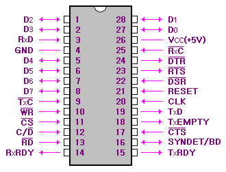
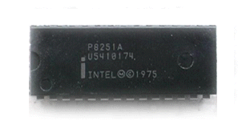
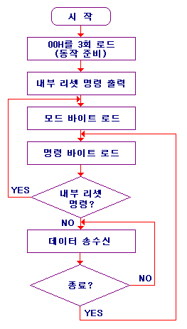

008251의 구조와 기능
8251의 구조 및 기능
1. 8251의 핀 배치도


2. 핀별 기능
(1) D0∼D7 : CPU에서의 데이터, 커맨드, 스테터스를 주고받기 위한 데이터 버스
(2) RESET : 새로운 컨트롤 워드를 받을 때까지 IDLE 상태로 대기
(3) CLK(Clock) : 내부 동작의 타이밍을 맞추는데 사용. 비동기 x1모드에서는 RxCLK/TxCLK의 30배 이상이 되어야 하며, x16, x64 모드는 4.5배 이상이 되어야 한다.
(4) WR(Write) : CPU가 8251로 데이터나 컨트롤 워드를 써넣을 때 사용.
(5) RD(Read) : CPU가 8251의 스테터스, 데이터를 읽을 때 사용.
(6) C/D(Control/Data) : CPU와 8251과 데이터를 주고받을 때 컨트롤 레지스터 혹은 데이터 레지스터를 지정
(7) CS(Chip Select) : 8251을 선택(Enable)할 때 사용
(8) TxD(Transmitter Data) : 송신 데이터 출력
(9) RxD(Receiver Data) : 수신 데이터 입력
(10) TxC(Transmitter Clock), RxC(Receiver Clock) : 송/수신용 시리얼 기준 클럭으로 비동기식일 경우 보레이트의 ×1, ×16, ×64의 주파수, 동기식일 경우에는 보레이트와 같은 주파수 입력
(11) TxRDY(Transmitter Ready) : 데이터 전송이 가능하다는 것을 알리는 신호
(12) RxRDY(Receiver Ready) : 송신된 데이터가 수신 버퍼에 있다는 것을 표시
(13) TxEMPTY(Transmitter Empty) : 송신 버퍼에 데이터가 없음을 표시
(14) SYNDET/BD(SYNC Detect/BRKDET Detect) : SYNDET는 동기식 모드 입/출력 핀으로 사용되며, BD는 비동기 모드시 브레이크 상태 검출
(15) DTR(Data Terminal Ready) : 8251이 송신 가능 상태에 있다는 것을 모뎀에 알림
(16) DSR(Data Set Ready) : 모뎀의 상태를 검출
(17) RTS(Request To Send) : 모뎀의 송신 기능을 조정
(18) CTS(Clear To Send) : 모뎀의 송신 가능의 상태를 검출
3. 모드 설정
⑴ Control Word의 구조
D7 | D6 | D5 | D4 | D3 | D2 | D1 | D0 |
S2 | S1 | EP | PEN | L2 | L1 | B2 | B1 |
⑵ 모드 구조
동 기 | S2 | S1 | 의미 |
비동기 | 0 | 0 | 무효 |
0 | 1 | 스톱 비트 수 : 1비트 | |
1 | 0 | 스톱 비트 수 : 1.5비트 | |
1 | 1 | 스톱 비트 수 : 2비트 | |
동기 | 0 | 외부 동기 검출 : 출력 | |
1 | 외부 동기 검출 : 입력 | ||
0 | 동기 캐릭터 수 : 2 SYNC | ||
1 | 동기 캐릭터 수 : 1 SYNC |
EP : 패리티 발생
0 | 홀수 패리티 발생 |
1 | 짝수 패리티 발생 |
PEN : 패리티 Enabled
0 | Disabled |
1 | Enabled |
L2, L1 : 캐릭터 길이
L2 | L1 | 의 미 |
0 | 0 | 5bit |
0 | 1 | 6bit |
1 | 0 | 7bit |
1 | 1 | 8bit |
B2, B1 : 브레이트
B2 | B1 | 의 미 |
0 | 0 | 동기 모드 |
0 | 1 | ×1 |
1 | 0 | ×16 |
1 | 1 | ×64 |
4) 커맨드 설정
⑴ Command Word 구조
D7 | D6 | D5 | D4 | D3 | D2 | D1 | D0 |
EH | IR | RTS | ER | SBRK | RxE | DTR | TxEN |
⑵ 커맨드 내용
EH : 엔터 헌트 모드
0 | 무의미 |
1 | SYNC 캐릭터를 검출 시작 |
IR : 소프트웨어 리셋
0 | 무의미 |
1 | 8251을 리셋 |
RTS : RTS 단자 제어
0 | RTS = 0 으로 설정 |
1 | RTS = 1 로 설정 |
ER : 에러 리셋
0 | 무의미 |
1 | 에러 플래그 클리어 (PE, OE, FE) |
SBRK : 샌드 브레이크 캐릭터
0 | 보통 동작 |
1 | TxD = 0 으로 설정 |
RxE : 수신 Enabled
0 | 수신 금지 |
1 | 수신 허가 |
DTR : DTR 단자 제어
0 | DTR = 0 으로 설정 |
1 | DTR = 1 로 설정 |
TxEN : 송신 Enabled
0 | 송신 금지 |
1 | 송신 가능 |
5) 상태 레지스터
⑴ Status Register 구조
D7 | D6 | D5 | D4 | D3 | D2 | D1 | D0 |
DSR | SYNDET/BD | FE | OE | PE | TxE | RxRDY | TxRDY |
⑵ Status 내용
DSR :
0 | DSR Off |
1 | DSR On |
SYNDET/BD
동기시 | 0 | 없다 |
1 | SYN 문자 테스트 | |
비동기시 | 0 | 없다 |
1 | 브레이크 신호 |
FE : Flag Error
0 | 없다 |
1 | 프레그 에러 발생 |
OE : Overrun Error
0 | 없다 |
1 | 오버런 에러 발생 |
PE : Parity Error
0 | 없다 |
1 | 페리티 에러 발생 |
송신 가능 상태 (버퍼 상태)
0 | 송신 불가능 |
1 | 송신 가능 (버퍼 비어 있음) |
RxRDY : 수신된 캐릭터 상태
0 | 수신된 캐릭터 없음 |
1 | 수신된 캐릭터 있음 |
TxRDY : 송신 가능 상태
0 | 송신 불가능 |
1 | 송신 가능 |
※ 8251을 비동기 통신 모드로 사용할 경우 프로그램 흐름도
